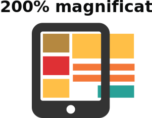

Designing for users with
low vision

Do...


publish all information on webpages

use a combination of colour, shapes and text

follow a linear, logical layout
put buttons and notifications in context
Don't...

use low colour contrasts and small font size
bury information in downloads

only use colour to convey meaning

spread content all over a page
separate actions from their context